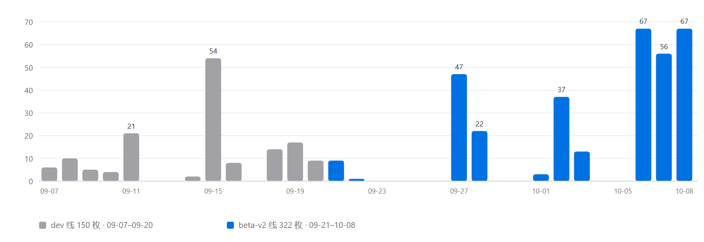
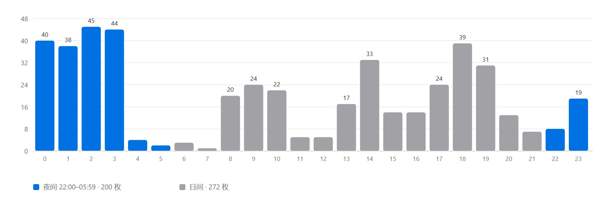
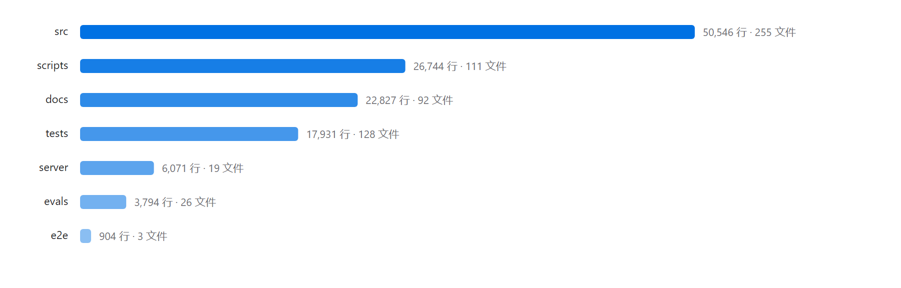
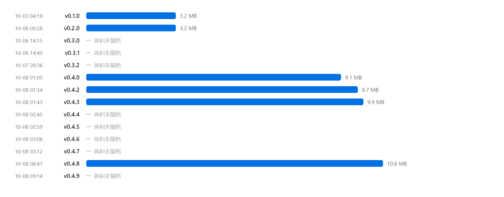
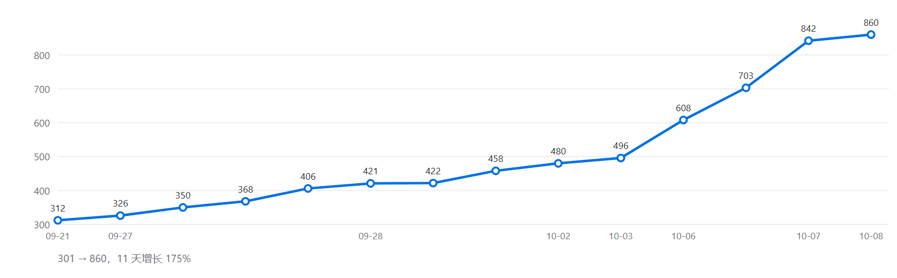
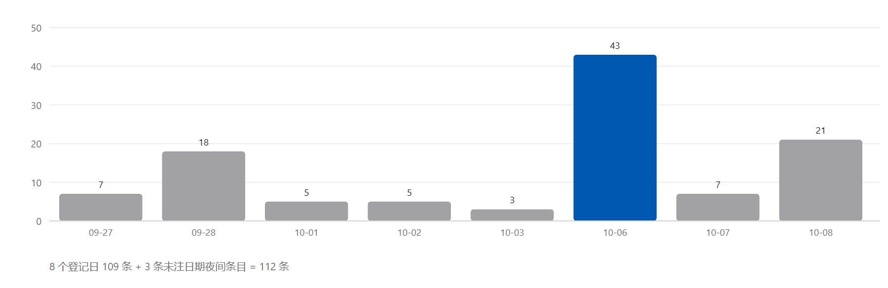

三十个昼夜，从第一行代码到一百一十二组突围
一份纯数据的开发记录：时间怎么花的、代码写了多少、质量怎么守的、比赛赢到了哪一步。所有数字均可由仓库记录复核。
校园知识问答（RAG）＋ 画像 ＋ 排程引擎 ＋ 移动端。技术上是一条「数据 → 检索 → 对话 → 排程 → 执行」的完整链路。
| 项 | 内容 |
|---|---|
| 项目名称 | 光溯 · 上理生活助手（usst-lightpath-planner，v0.4.9） |
| 参赛赛事 | 第 18 届光电杯创新设计大赛（光电学院学术部主办）· 主题「智逐光影，溯梦未来」 |
| 团队 | 2 人（CY：产品/数据/梨宝线；RAY：周排程算法/周视图）＋ AI 协作开发 |
| 技术栈 | TypeScript / React / Vite / Tailwind · Python FastAPI · SQLite（FTS5＋向量）· Capacitor / Android |
| 部署形态 | 公网 Web（nginx＋systemd）· 签名 APK 直装 · ICS 订阅 · 云同步 |
| 版本 | 定位 | 转向原因 |
|---|---|---|
| v1 | 反内卷排程工具（纯前端） | 把排程当主干，「留白率」为核心主张 |
| v2 | 梨宝校园 AI 助手（＋后端＋RAG） | 「贴心」本质是伙伴而非工具；规则引擎撑不起开放问答 |
| v3（终） | 懂上理的智能决策伙伴 | 排程只是一种输出形式；确立「懂上理 / 懂你 / 懂分寸」三钩子与 L1–L4 边界（L4 决策层绝不做） |
21 个有提交日、11 个全休日。末三日（10-06/07/08）共 190 枚 commit，占全程 40.3%。


| 口径 | 数值 |
|---|---|
| 两线合并 22:00–05:59 | 200 / 472（42.4%） |
| 两线合并 00:00–05:59 | 173 / 472（36.7%） |
| beta-v2 线 22:00–05:59 | 177 / 322（55.0%） |
| 单小时峰值 | 10-08 00 时 20 枚；10-06 03 时、10-07 14 时各 15 枚 |
语言构成：TS 302 · TSX 117 · MD 112 · PY 90 · MJS 15 等。仅排程引擎即 35 文件 11,463 行。

| 目录 | 行数 | 文件 | 内容 |
|---|---|---|---|
| src | 50,546 | 255 | 前端：features 167 文件（17 个子模块）· lib/planner 引擎 35 文件 11,463 行 · components 26 文件 |
| scripts | 26,744 | 111 | 数据流水线（61 个 Python 脚本 17,244 行）· 门禁与验收工具（12 个 mjs 2,957 行）· 37 个测试 |
| docs | 22,827 | 92 | 台账、战报、规格、验收报告等 87 篇 Markdown |
| tests | 17,931 | 128 | 引擎 / UI / 梨宝 / 移动端等测试 |
| server | 6,071 | 19 | FastAPI 后端（问答 / 检索 / 账号 / 同步 / ICS / 对话管理） |
| evals | 3,794 | 26 | 金标数据集与评测资产（214 条金标） |
| e2e | 904 | 3 | Playwright 端到端 |
| mobile | — | 59 | Capacitor Android 壳工程（gradle / 清单 / 签名） |

151 个测试文件、约 1,322 个用例、214 条金标、112 条阻塞全部留痕。引擎基线 11 天从 312 爬到 860。

| 纪律 | 内容 |
|---|---|
| 基线只增不减 | pass 数低于基线即红灯，视为删除 / 跳过测试，不是「基线记错」 |
| 反向验证 | 新断言必须先红后绿（关掉实现要变红），禁止改断言凑绿 |
| 金标只增不改 | 期望值手算自规约，「禁止跑一遍实现抄输出（防循环论证）」 |
| 虎符机制 | 门禁脚本 md5 指纹登记，防夜间篡改门禁假绿 |
| 开工 / 收尾双闸 | preflight（工作树 / 共同祖先 / 落后 / 脏区四查）＋ impact（改动反查守护测试）＋ gate_overnight 全量门禁；自研门禁 / 审计脚本约 7,000 行（25 个） |
| 评测 | 结果 | 出处 |
|---|---|---|
| 理解端点在线评测 | action F1 = 1.0（TP30 / FP0 / FN0），逐槽 EM 0.923 | docs/eval-libao-understand-2026-09-27.md |
| dialog 场景复评（40 条） | 宏 F1 0.972 / acc 0.975 / 拦截率 1.0 | 台账 §D 白天终验 |
| 七条真机剧本 | 19 过 / 0 挂（live LLM） | 台账 §H（2026-10-02） |
| 「出去玩 1 小时」全链 | 6 / 0（含 Ctrl+Z 撤销验证） | 台账 §D 终验 |
| 方法库检索（金标 126 条） | recall 1.0 / MRR 0.777 / 拒答 1.0 / 伪科学拦截 1.0 | method-kb-acceptance-report |
| 变异测试抽样 | SOFT_BUFFER_MIN 5→6 被精确捕获（startMin 776→775） | scheduler-v2-spec §13.10 |
| 真实对话回归 | test:libao 45 轮双判据；eval:libao 9 维度 25 项 | AGENTS.md |

| 事故 | 日期 | 根因 | 处置 |
|---|---|---|---|
| CRLF 虚增 diff | 09-21 | 两树行尾形制不一，6 个数据文件被判整文件重写（虚增约 5.2 万行） | 全仓 LF ＋ .gitattributes 钉死 |
| 双历史无共同祖先 | 09-21→10-06 | beta-v2 与 origin/dev 零共同祖先，agent 拉取只见旧历史 | preflight 机器闸拦截；10-06 13:20 拍板切默认分支销案 |
| 三方会话同树冲突 | 10-06 | 三个无人值守会话同一工作树并行 | mtime 取证＋车道划分（所有权零交集、显式路径 add），零覆盖 |
| 部署误删 dist | 10-06 | 管道命令置空线上 dist，抢修时 rm -rf 误删备份 | 三份 sha256 备份恢复（404 约 4 分钟）；次日上线每日 04:17 快照 |
| 图标 v24 暗堡 | 10-08 | Capacitor 模板 drawable-v24 变体在 API≥24 恒优先 | aapt2 拆包定位后修复（此前两轮修复均未触及） |
采集 / 抓全文 / 清洗 / 去重 / 建索引五步流水线，可独立重跑。
| 资产 | 数值 | 备注 |
|---|---|---|
| 校园资讯主条目 | 520 篇（515 入全文检索） | 公众号＋官网权威源；搜狗 token 过期致 57 篇缺全文（遗留） |
| 向量块 | 1,873 | bge-small-zh-v1.5，CPU 端 fastembed |
| 校园地点 | 147（26 POI＋121 landmark） | 定位成功 143/147；基础学院 4 处路网未收录，如实不吸附 |
| 路网 | 3 校区 OSM · 1,600+ 节点 | 军工路主校区 107 具名建筑、1,269 节点 / 1,433 路段 |
| 方法库 / 习惯库 | 160 条 | 金标 126 条评测；价值观终审全过（争议 9 条如实标注） |
| 数据库 | usst_articles.db · 17 MB | FTS5 全文＋向量索引 |
Web · 安卓 APK · 云同步（ICS 订阅）。每项功能都有对应的机器守护。
| 功能 | 说明 | 验证 |
|---|---|---|
| 排程真引擎 | 两遍法编排、增量滚动、锁定 / 涟漪、转场缓冲、六模式 | engine 860 用例＋5 份周级 golden 快照 |
| 梨宝对话 | 追问状态机＋对话管理器＋8 执行器；LLM 先行、规则兜底 | 金标 111 条双通道；45 轮回归 |
| 校园问答 | 520 篇 RAG＋分层记忆＋相关性门 | 路由测试 44/44；隐私 / 事实错误修复留痕 |
| 画像 | 30 题分层问卷 → 规则映射 → 块级偏好入引擎 | L1–L4 边界；画像解释「这是我猜的，可改」 |
| 移动端 | 今日页 / 周板 / 梨宝全屏 / 常驻通知 / 执行力评估五维 | mobile 测试 7 文件＋E2E 冒烟 18 用例 |
| 云同步 | 账号 / 待办 / 目标 / 计划，LWW＋契约 schemaVer=2 | syncContract 契约测试；双向补洞（v0.4.5） |
| 课表解析 | PDF / 图片 → 19 条日程整链 | 公网实测 [] → POST 19 条 |
| 台账与守护 | capability map 机器生成「功能 ↔ 测试」映射 | --check 进门禁，删测试即红 |
所有权表分工：CY 负责画像 / 梨宝 / 后端 / 数据 / 文档，RAY 负责周排程 / 引擎 / 组件；接壤处仅留一个冻结接口。RAY 两度以独立分支交付（09-20 第四轮 UX、10-08 五批），合并口径为「底层与实现逻辑以 Ray 的提交为准」。10-02 起转单人主导。
人类拍板 ＋ AI 军团执行 ＋ 独立验收（MOSS）。人类负责所有需求歧义与契约拍板（BLOCKERS 中「需要人决定」逐条留痕）；AI 承担无人值守通宵批次（6+ 份夜战报告存档）；验收角色独立于执行。
道门禁：preflight / impact / gate_overnight，开工与收尾双向卡关。
条阻塞全部登记，宁可停手也不猜一个值继续推。
次三方会话数据丢失——10-06 凌晨三会话同树并行，车道划分零互踩。
| 项 | 结果 |
|---|---|
| 初赛 | 2026-10 中上旬专家初评，112 组参赛 |
| 名次 | 决赛入围（拟奖 10 组），光溯列第 7 席 |
| 全场分布 | 三等奖 70 组 · 二等奖 25 组 · 决赛入围 10 组 · 余 7 组不授奖 |
| 决赛 | 2026-10 下旬现场答辩（PPT＋演示），待进行 |
| 备战状态 | 演示账号全要素播种并实测剧本命中；v0.4.9 为演示版本；95 枚 commit 已推 GitHub 实现「远端与线上一致」 |
| 风险 | 服务器租约 10-25 12:17 到期，早于决赛 |
| # | 事项 | 影响 | 状态 |
|---|---|---|---|
| 1 | 服务器 10-25 到期 | 决赛前服务中断风险 | 仅 CY 可续，未办 |
| 2 | 决赛材料（申报书 / PPT / 视频） | 决赛必需 | 未启动 |
| 3 | 57 篇公众号缺全文 | 检索覆盖 | 待跑 fulltext.py 补抓 |
| 4 | 生活服务类数据偏薄 | 问答覆盖 | 待补采 |
| 5 | 基础学院 4 处定位未收录 | 空间问答 | OSM 无数据，如实标注 |
| 6 | lightpath.db 历史副本含敏感数据 | 推远端前需 filter-repo | 已登记，决赛 push 前处理 |
本报告每个数字的来源与测量方法。
1 · commit 计数 git rev-list --count 分别计 origin/dev（150）与本地 beta-v2（322）；Ray 五批经 merge 已含于 322。
2 · 行数 / 文件数 git ls-files 按文本扩展名过滤后 wc -l 汇总（2026-10-10），不含 node_modules / dist / 二进制；data/ 下 17 MB SQLite 库不计行数。
3 · 时段 / 每日分布 git log --date=format 逐枚统计（时区 +0800）。
4 · 测试基线 docs/wp-ledger-v2.md 各批次登记的 gate_overnight 实测值；「约 1,322 用例」为 grep it/test( 近似。
5 · BLOCKERS BLOCKERS.md 文件条目（8 个登记日 109 条＋3 条未注日期夜间条目）。
6 · 比赛结果 112 组总数、十强名次、奖项分布出自队内留存放榜名册四纸（仓库内无记录）；赛事时间线出自 data/usst_articles.json 收录的官方通知。
7 · 评测数字 均出自 docs/ 下对应评测 / 验收报告原文，未重新实测。
8 · 互证文件 docs/development-report-full-2026-10-11.html（完整合并版）、docs/lightpath-chronicle-2026-10-11.html（叙事海报版）、docs/wp-ledger-v2.md（批次台账）、BLOCKERS.md（112 条）。